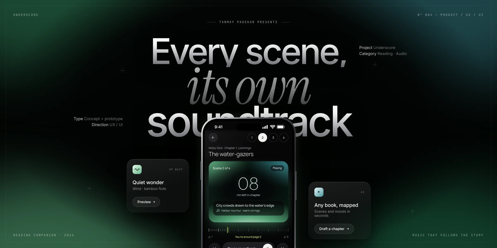
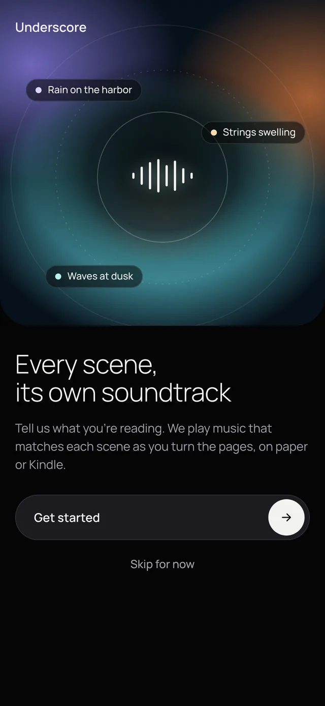
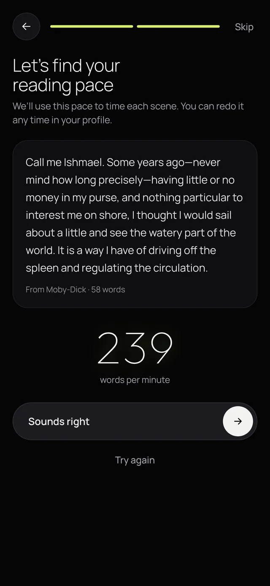
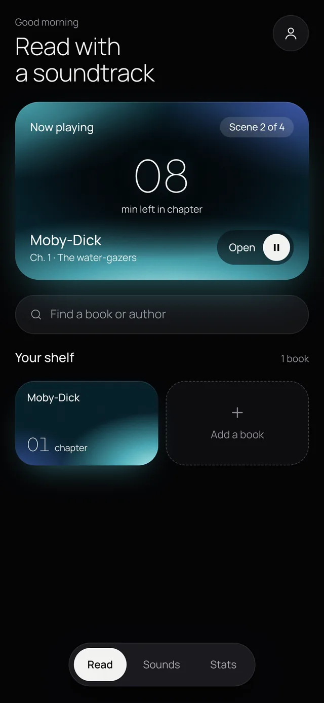
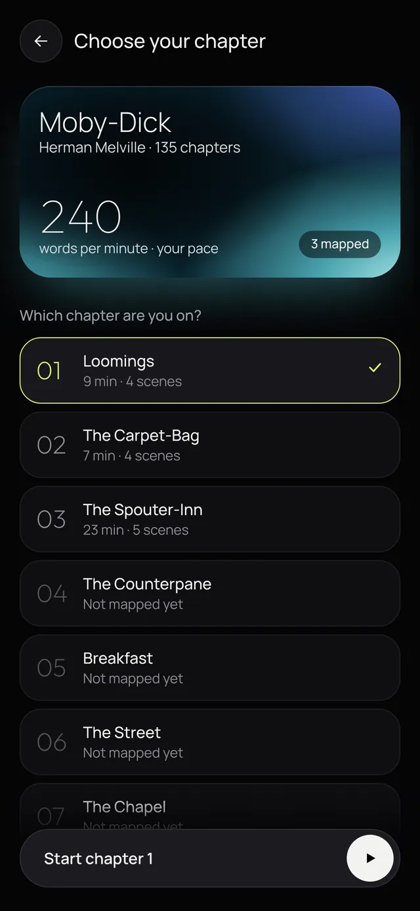
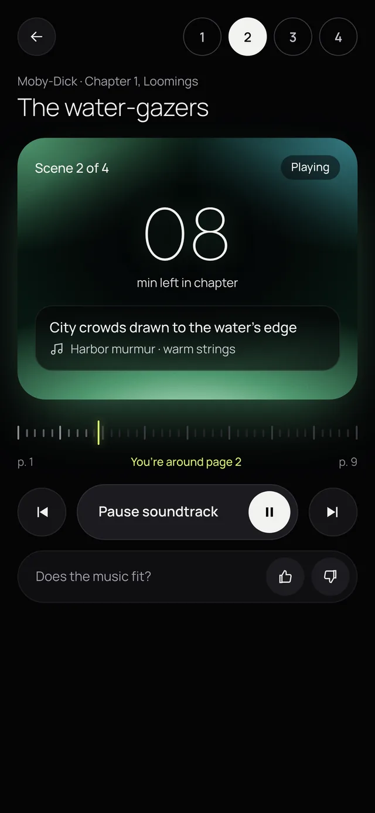
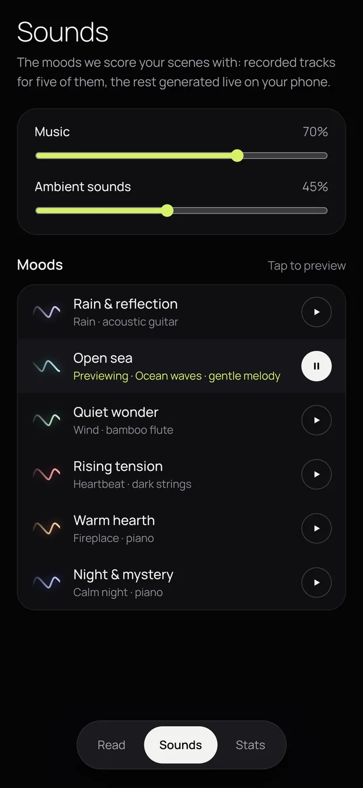
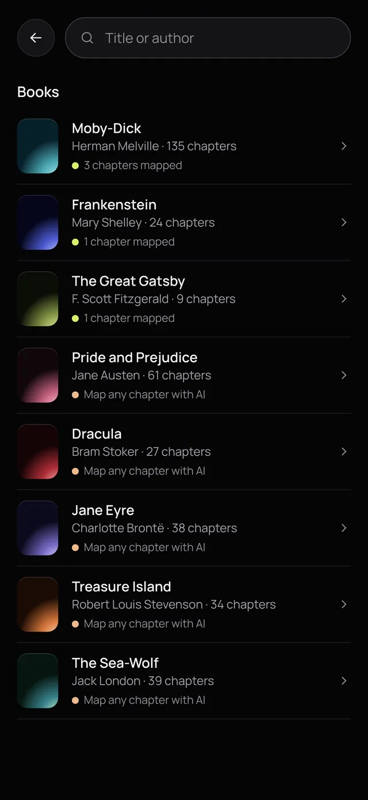
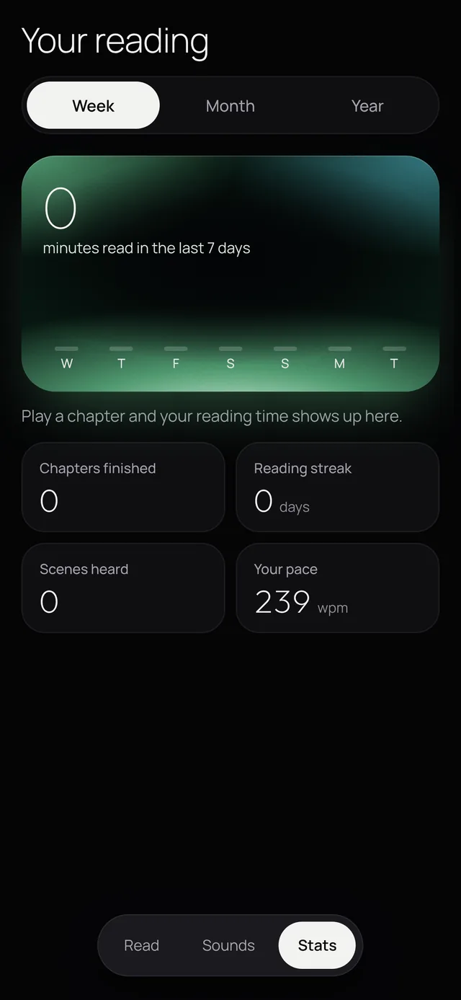
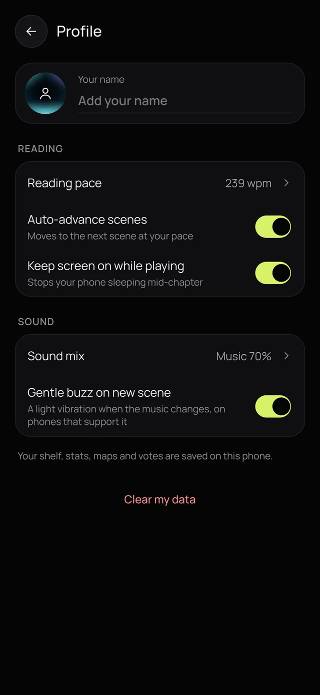

Underscore: background music that follows the scene you’re reading

A missed bus, a reading playlist, and goosebumps
After a shift I missed my bus and had half an hour at a noisy stop. I put on headphones, started a “reading background music” playlist and opened my book. I was reading a scene where a character walks along the beach in the evening, with the wind blowing and good thoughts drifting by, and the track that came on matched it exactly. The whole scene lifted. I got goosebumps.
That was luck. Underscore is about making it happen on purpose.
Books change mood scene by scene. Playlists don’t.
Reading playlists hold one mood for the entire session, while a single chapter can move from calm to tense to warm.
People read on paper and Kindle. Nobody will move to a new reading app just to get music.
Soundtracks scored by hand for books have been tried before (Booktrack), and they never grew beyond a small catalog.
Read anywhere. The music keeps pace.
You read wherever you like and tell the app which book and chapter you’re on. Underscore follows a scene-by-scene map of that chapter, moves through the scenes at your measured reading pace, and crossfades both the music and the color of the screen as each new scene begins.
Four choices that shaped the product
It works with paper and Kindle, and with any edition of a book.
A one-minute pace test during onboarding sets the timing. A page ruler lets you correct it with one tap, and you can skip scenes.
Any book and chapter can be mapped in under a minute. A thumbs-down and a mood picker let readers fix scenes, and when two or more readers agree on a new mood, it becomes the default for everyone.
Music is generated live in the browser: piano, plucked guitar and harp, music box, strings, brass and bass, plus rain, waves, wind, fire, crickets and heartbeat ambience. Recorded tracks are layered in for five moods.
A near-black screen where the only color comes from the scene
Underscore is built for night reading and commutes. Each mood has its own color bloom with fine film grain, and the screen’s glow shifts when the scene changes, so the room changes with the story. Manrope keeps the text calm and clean, and hairline Outfit numerals carry the large timers. Mood markers are small gradient sound waves.
Six of the eight moods. The other two are The call to sail and Party lights. A usability pass set 44px minimum tap targets, a 13px minimum text size, a consistent type scale, an 8-point spacing grid, safe areas and screen-reader labels.
Nine screens, from first launch to your stats


A live, timed reading test

Continue-reading card and your shelf

Your pace, reading time and scene count

Scene card, page ruler and “does the music fit?”

Music and ambience mix, mood previews

Search, or add any book with AI

Minutes read, streak and favorite moods

A working prototype, not just screens
- A working web app with all nine screens, installable to the phone’s home screen
- A live generative music engine, crossfades between scenes, and six recorded tracks
- Five hand-mapped chapters: Moby-Dick 1–3, Frankenstein 5 and The Great Gatsby 3
- AI scene maps for any book and chapter, with an optional reader note for lesser-known books
- A shared library: drafted maps, added books and mood votes shared across all readers, with per-person votes that nobody else can overwrite
I tested it with real readers, and the core moment, music that matches the scene, held up.
The AI scene drafting and the shared library run inside Claude, so on this site the prototype uses the five hand-mapped chapters and keeps your votes on your device.
From prototype to a free web app
A free web app with its own backend for AI drafting and the shared library.
Swap in fully licensed or CC0 recordings.
iOS and Android apps once the web version proves itself.